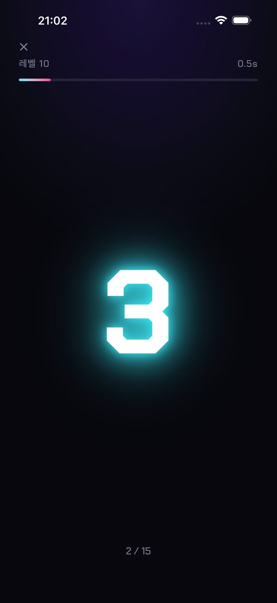
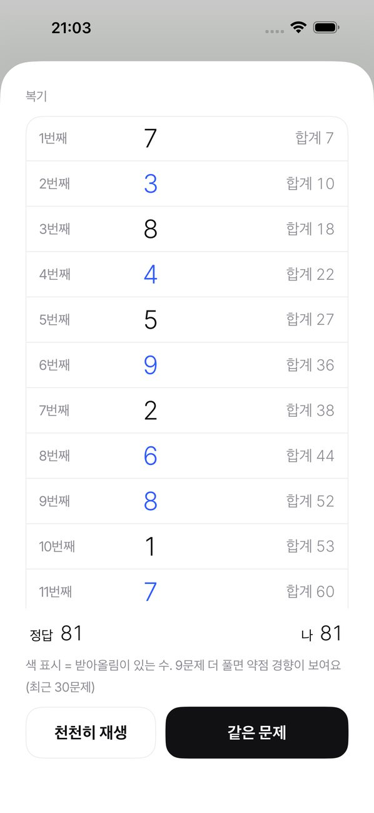
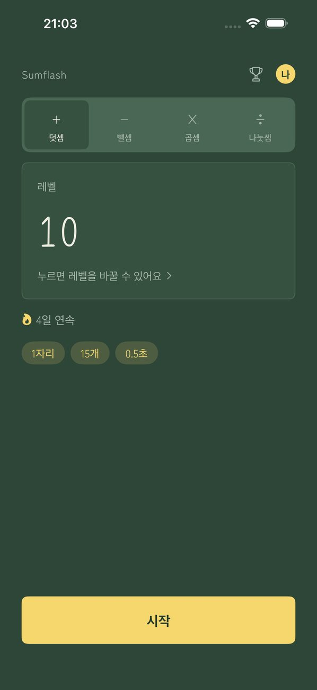

SUMFLASH
숫자가 번쩍. 머릿속으로 더해요.
숫자가 하나씩, 아주 잠깐 표시돼요. 합계를 입력하세요. 주산으로 연습하는 방식 그대로의 플래시 암산이에요.
App Store에서 다운로드어디서 틀렸는지 확인
답을 입력할 때마다 지나간 숫자를 그 시점의 중간 합계와 함께 하나씩 돌아볼 수 있어요. 받아올림이 있었던 수에는 색이 표시되어, 정확히 어디서 틀렸는지 알 수 있어요. 같은 문제를 다시 풀거나 천천히 다시 재생할 수도 있어요.
사용 방법
- ‘시작’ 누르기숫자가 하나씩 표시돼요.
- 합계 입력키패드로 답을 입력해요.
- 결과와 복기숫자와 중간 합계를 보고 어디서 틀렸는지 찾아요.
화면



기능
- 30단계 레벨 중에서 선택(1자리 × 3개 × 1초부터 3자리 × 15개 × 0.5초까지)
- 표시 속도를 0.2초에서 5.0초 사이로 직접 설정
- 홈 화면에 연속 기록 표시. 한 주에 하루는 쉬어도 연속 기록이 이어져요
- 원하는 시각에 매일 리마인더(연습한 날에는 울리지 않아요)
- 숫자는 그냥 나타났다 사라질 뿐, 방해되는 애니메이션이 없어요
- 5가지 테마(미니멀 / 화지 / 네온 / 칠판 / 벚꽃)
- 가족마다 따로 쓰는 프로필
- 랭크전(1자리 × 10개)과 Game Center 랭킹
- 홈 화면의 탭에서 덧셈, 뺄셈(더하기·빼기 혼합), 곱셈, 나눗셈 중 선택. 각각 30단계 레벨이 따로 있어요
- 숫자 읽어 주기
- 기록은 기기에만 저장돼요(Game Center에 로그인한 경우, 랭킹을 위해 랭크전 최고 기록만 Apple에 전송돼요). 계정이 필요 없어요
프리미엄
광고 없음. 월간 자동 갱신 구독이에요. iPhone의 ‘설정 › Apple ID › 구독’에서 언제든지 해지할 수 있어요. 프리미엄으로 달라지는 건 광고뿐이에요. 다른 기능은 모두 무료예요.
광고 안내
광고는 홈 화면 아래쪽과 세트 사이에만 나와요. 숫자가 표시되는 동안, 답을 입력하는 동안, 복기하는 동안에는 광고가 나오지 않아요. 프리미엄에서는 광고가 없어요.